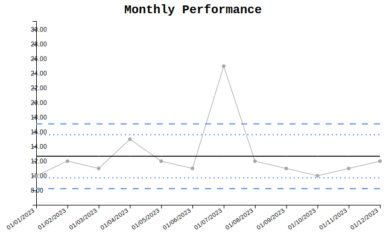
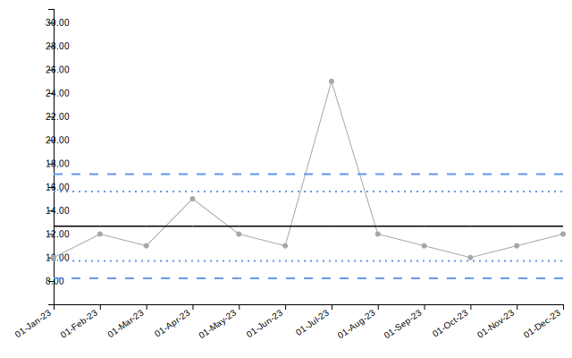
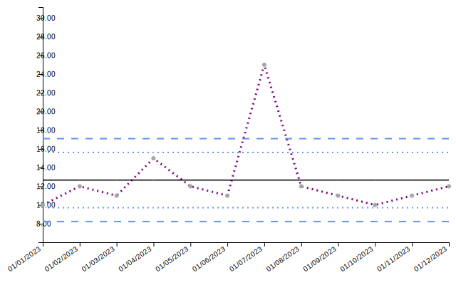
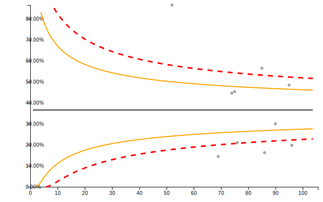
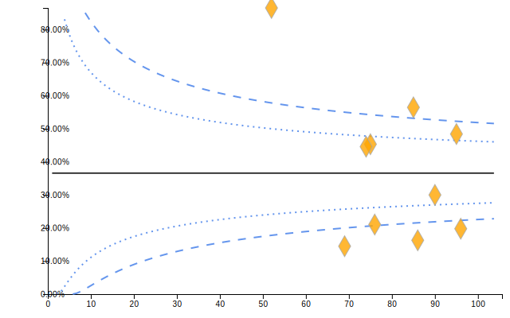
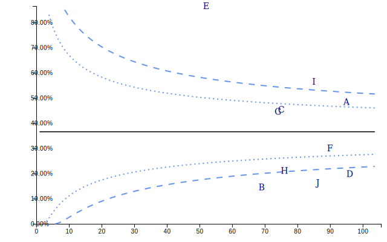
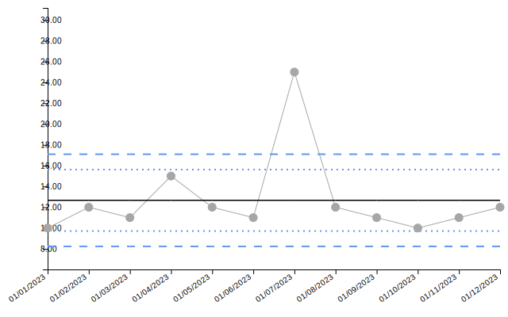
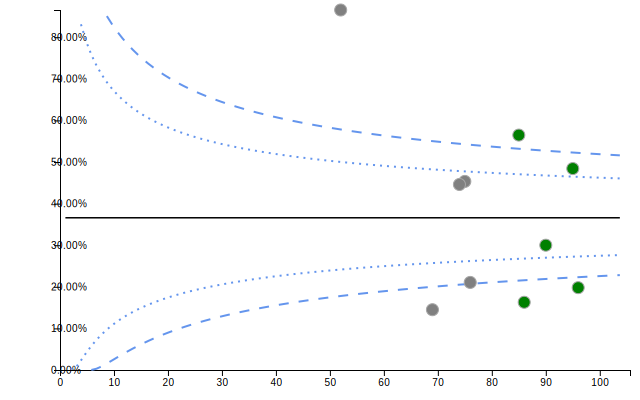
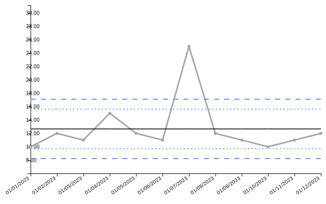

Aesthetic Options
aesthetic_options.RmdIntroduction
Visual adjustments in controlcharts are handled through
dedicated settings arguments. Each group of settings (e.g., canvas,
axes, lines) has its own argument (e.g., canvas_settings,
x_axis_settings).
To see the full list of available options for a group, you can use
the helper functions spc_default_settings('{group_name}')
or funnel_default_settings('{group_name}') (e.g.,
spc_default_settings('x_axis')).
Setup Data
We will use the following synthetic datasets for the examples below:
set.seed(42)
# SPC Data (Time Series)
spc_data <- data.frame(
date = seq(as.Date("2023-01-01"), by = "month", length.out = 12),
value = c(10, 12, 11, 15, 12, 11, 25, 12, 11, 10, 11, 12),
group = "A"
)
spc_data$label_text <- paste0("Val: ", spc_data$value)
# Funnel Data (Categorical)
funnel_data <- data.frame(
id = LETTERS[1:10],
num = sample(10:50, 10),
denom = sample(50:100, 10)
)Title Settings
The title argument allows you to add a plot title and
customize its font and position. Note that title takes a
named list of parameters.
spc(
spc_data,
keys = date,
numerators = value,
title = list(
text = "Monthly Performance",
font_size = "20px",
font_family = "Courier New",
font_weight = "bold"
)
)$static_plot
Canvas Settings
The canvas_settings argument controls the overall plot
area, such as padding. This is useful if labels or titles are being
clipped.
Axis Settings
You can customize the X and Y axes using x_axis_settings
and y_axis_settings. Common options include toggling
visibility, rotating ticks, and forcing limits.
Date Settings (SPC Only)
For SPC charts with date keys, date_settings controls
how dates are formatted on the axis and tooltips.
spc(
spc_data,
keys = date,
numerators = value,
date_settings = list(
date_format_day = "DD",
date_format_month = "Mon", # Abbreviated month
date_format_year = "YY",
date_format_delim = "-"
)
)$static_plot
Line Settings
The line_settings argument allows customization of the
main data lines, including targets and limits lines.
SPC: Main Line
spc(
spc_data,
keys = date,
numerators = value,
line_settings = list(
colour_main = "purple",
width_main = 3,
type_main = "2 5" # Dashed line pattern
)
)$static_plot
Funnel: Limit Lines
Funnel plots rely heavily on control limits. You can customize the 95% and 99% limits independently.
funnel(
funnel_data,
keys = id,
numerators = num,
denominators = denom,
line_settings = list(
colour_95 = "orange",
width_95 = 2,
type_95 = "10 0", # Solid
colour_99 = "red",
width_99 = 3
)
)$static_plot
Scatter Settings
Control the appearance of data points using
scatter_settings.
Basic Point Styling
funnel(
funnel_data,
keys = id,
numerators = num,
denominators = denom,
scatter_settings = list(
shape = "Diamond",
size = 8,
colour = "orange",
opacity = 0.8
)
)$static_plot
Point Label Styling (Funnel Only)
Funnel charts allow displaying the group key directly on the scatter
points (instead of floating tooltips). You can customize this text using
scatter_text_* options.
funnel(
funnel_data,
keys = id,
numerators = num,
denominators = denom,
scatter_settings = list(
use_group_text = TRUE, # Enable text labels on points
scatter_text_colour = "darkblue",
scatter_text_size = 14,
scatter_text_font = "Georgia"
)
)$static_plot
Label Settings
Data labels can be customized via label_settings. You
can pass a column to the labels argument to display custom
text.
Conditional Formatting
A powerful feature of controlcharts is vectorised
settings. While most settings take a single value (e.g.,
colour = "blue"), specific settings accept a vector
matching the length of your data.
This allows you to apply conditional formatting logic directly from R.
Currently, this is supported for: * scatter_settings
(Both SPC and Funnel) * line_settings (SPC Only)
Conditional Point Colours
In this SPC example, we color data points red if they exceed a value of 15.
# Create a color vector matching the data logic
point_colors <- ifelse(spc_data$value > 15, "red", "#E69F00")
spc(
spc_data,
keys = date,
numerators = value,
scatter_settings = list(
colour = point_colors,
size = 5
)
)$static_plot
In this Funnel example, we highlight points with a high denominator (large population).
# Logic: Highlight large denominators
funnel_cols <- ifelse(funnel_data$denom > 80, "green", "gray")
funnel(
funnel_data,
keys = id,
numerators = num,
denominators = denom,
scatter_settings = list(
colour = funnel_cols,
size = 6,
opacity = 1
)
)$static_plot
Conditional Line Segments (SPC Only)
You can also color different segments of the main line. This is useful for highlighting specific time periods or phases.
# Define colors for line segments
# Note: The vector length corresponds to the points; segments connect points.
line_colors <- rep("gray", nrow(spc_data))
line_colors[5:8] <- "orange" # Highlight a middle section
spc(
spc_data,
keys = date,
numerators = value,
line_settings = list(
colour_main = line_colors,
width_main = 3
)
)$static_plot